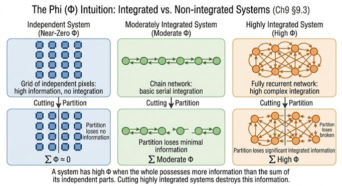

Part III — The Scientific Models
Chapter 9: Global Workspace, IIT, and Beyond
Competing Theories of Consciousness, and What They Actually Explain
By this point, we have assembled several pieces of the puzzle: the mind is not a thing but a process; that process is constructed, predictive, and temporally extended; and conscious experience is unified, integrated, and continuous. The next question is obvious: do we already have a scientific theory that explains all this?
There are, in fact, several, and each claims, implicitly or explicitly, to have captured the essence of consciousness. In this chapter we examine two of the most influential: Global Workspace Theory and Integrated Information Theory, together with a handful of related approaches. The goal is not to declare a winner. It is to understand what each explains, what each leaves out, and what they imply for building conscious systems.
9.1Why No Single Theory Is Enough
There is a recurring pattern in consciousness research. A theory explains some key features of conscious experience. Researchers extend it to cover everything. It runs into limits. A new theory emerges. This is not failure, it reflects the genuine complexity of the problem. Consciousness is not a single mechanism operating at a single level of description. It may require multiple overlapping frameworks, each capturing something real that the others miss.
9.2Global Workspace Theory: Consciousness as Broadcast
Global Workspace Theory, developed by Bernard Baars and extended by Stanislas Dehaene, proposes a deceptively simple idea: information becomes conscious when it is made globally available to the rest of the system. Think of the brain as a large organisation in which dozens of specialist departments are working simultaneously, each on its own task. Most of this work happens in parallel and below any central awareness. The global workspace is like a shared announcement board: when a piece of information reaches this board, it becomes accessible to all departments at once. Attention is the spotlight that picks which information gets posted. Consciousness, on this account, is what it feels like to be the organisation receiving the announcement.
The metaphor captures something real. It explains why only a small fraction of all neural processing reaches awareness at any moment, the workspace has limited bandwidth. It explains why attention and consciousness are so closely linked, attention is the gateway to the workspace. And it explains the reportability of conscious contents: once information is in the workspace, all systems including the language system can access it and describe it. The theory maps cleanly onto the binding problem of Chapter 8 and onto the attention networks identified in Chapter 13. It is computationally plausible and matches a wide range of experimental findings.
Its limitation is equally clear. Broadcasting information does not obviously produce experience. A perfectly functioning global workspace, with information flowing freely to all systems, could in principle operate in the dark, with no inner life accompanying the broadcast. GWT explains how information becomes accessible. It does not explain why accessibility should feel like anything.
9.3Integrated Information Theory: Consciousness as Structure
IIT, developed by Giulio Tononi, takes a fundamentally different approach. Rather than asking what a conscious system does, it asks what a conscious system is, structurally. Its central claim is that consciousness corresponds to the amount of integrated information a system generates, measured by a quantity called phi (Φ). A system has high phi if it forms a tightly interconnected whole that cannot be decomposed into independent parts without losing information. A system has low phi if its parts operate relatively independently, like the pixels of a camera.
For a non-technical reader, the core intuition is this. Imagine cutting a system in half. If the two halves can operate just as well separately as they could together, if nothing is lost by the division, then the system has low integration. If cutting it in half destroys something that only existed in the whole, then the system is integrated. A camera has millions of pixels, each encoding information, but each pixel is independent of the others. A human brain has fewer total 'units' but they are so densely interconnected that no part can be cleanly isolated without altering the whole. IIT says this difference in integration is not merely a design feature, it is the difference between a system that has experience and one that does not.
IIT directly targets phenomenology, which is its greatest strength. It attempts to explain not just the function of consciousness but its felt quality, the unity, the richness, the irreducibility of experience. Its limitations are also significant. Phi is extremely difficult to calculate for any real system, making the theory hard to test in practice. It leads to counterintuitive results: any system with non-zero integration has some tiny amount of experience, which implies that even simple circuits are faintly conscious. And it still does not fully answer the hard problem: even granting that a highly integrated system has high phi, we can still ask why integration produces experience at all.

9.4What the Two Theories Together Reveal
GWT and IIT approach consciousness from opposite directions. GWT focuses on function, on how information becomes available, how attention works, why some processing reaches awareness and other processing does not. IIT focuses on structure, on what a conscious system is, regardless of what it is currently doing. Together they suggest something important: consciousness likely involves both global access and integrated structure. A system that broadcasts widely but has no deep integration might have access without real unity. A system that is tightly integrated but has no global broadcast might have unity without access. Full consciousness, whatever it is, probably requires both.
But even together, they do not resolve the core problem. They describe how information is organised and how it becomes available. They do not explain why this organisation is experienced.
9.5Other Contenders
Several related theories attempt to bridge this gap. Michael Graziano's Attention Schema Theory proposes that the brain builds a simplified model of its own attention process, and that this self-model is what we call consciousness. The strength of this view is that it explains why we feel aware, because the brain represents itself as being aware. The weakness is that representing awareness is not the same as having it. Higher-Order theories, associated with David Rosenthal and others, propose that a mental state is conscious when the system has a higher-order representation of that state, when it not only processes information but represents itself as processing it. This explains introspection well but, again, leaves the felt quality unexplained. Recurrent Processing Theory, developed by Victor Lamme, argues that consciousness depends specifically on feedback loops in the cortex, that feed-forward processing is not enough. This aligns well with both the temporal integration findings of Chapter 8 and the spiking systems argument of Chapter 16.
9.6What All These Theories Agree On
Despite their differences, these theories converge on a set of structural requirements. Conscious systems must integrate information rather than processing it in isolated streams. They must operate recurrently, with feedback loops rather than purely feed-forward computation. They must be selective, not all information can be conscious at once, and some mechanism must choose what enters awareness. Conscious content must be globally accessible, available to reporting systems, decision systems, and memory. And consciousness unfolds over time, not in instantaneous flashes.
This convergence is not accidental. It reflects real properties of biological brains, arrived at from different theoretical starting points. The ingredients identified in Chapter 13 are grounded in exactly this convergence, not in any single theory, but in what multiple independent theories keep rediscovering.
9.7The Shared Blind Spot
There is also a shared avoidance among all these theories, and it is worth naming directly. None of them fully answers the question of why information processing, however integrated, however globally broadcast, however recurrent, is accompanied by subjective experience. They explain the functional architecture of consciousness, what it does, with increasing precision. They do not explain the phenomenal reality of consciousness, what it is like. It is the central problem from which the whole inquiry begins.
9.8What This Means for Building Conscious Systems
For the engineering task ahead, these theories provide strong and practical guidance. A system that could seriously claim to be a candidate for consciousness would need to integrate information in a way that resists decomposition, broadcast that information globally across a workspace-like architecture, operate recurrently with genuine feedback dynamics, maintain temporal continuity, and support self-representation. Chapter 17's candidate architecture is built directly on these convergent requirements. It is not speculative in the sense of being arbitrary, it is grounded in the overlapping conclusions of independent theories.
Two broad positions remain at the end of this survey. The first holds that if we build the right structure, consciousness will emerge, that structure is sufficient. The second holds that structure explains function but not experience, that something beyond structure is needed. This book takes structure seriously while refusing to assume it is sufficient. Both positions will be revisited in Chapters 19 and 20.
9.9Closing line
Global Workspace Theory tells us how information becomes available. Integrated Information Theory tells us how it becomes unified. Together, they bring us closer to a structural account of consciousness than we have ever been. And yet, even if we build a system that broadcasts globally, integrates perfectly, and maintains coherence over time, we are still left with a question that none of these theories can answer: why does any of this feel like anything at all?